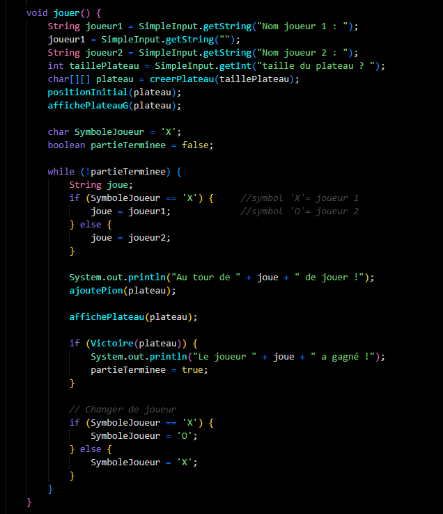
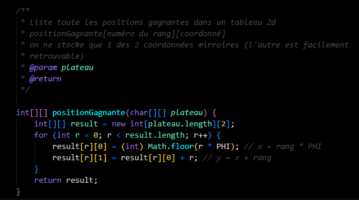

Plus que courir après un nouveau langage, ce qui me motive aujourd'hui c'est de consolider ce que je connais déjà — Java, C++ — et de me perfectionner, notamment en m'appuyant sur l'IA sans m'y reposer entièrement.

Ce qui me plaît dans la programmation, c'est cette logique de résolution de problème : comprendre pourquoi quelque chose ne fonctionne pas, et pourquoi une solution marche vraiment, pas juste faire fonctionner un code sans le comprendre.

Faire fonctionner le jeu ne me suffisait pas : je voulais comprendre pourquoi il fonctionne. Le jeu de Wythoff a une vraie théorie mathématique derrière lui — les positions gagnantes se calculent à partir du nombre d'or. Que ce soit en cherchant seul ou en m'aidant ponctuellement d'une IA pour clarifier un point, l'objectif reste le même : comprendre vraiment la logique, pas juste copier une solution qui marche.
« L'IA peut m'aider à comprendre plus vite, mais pas comprendre à ma place. » — Brayan Campion